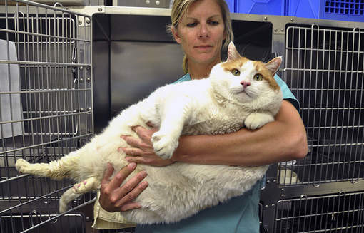
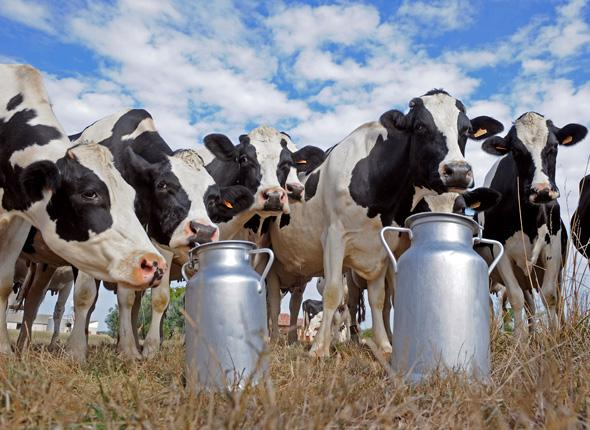
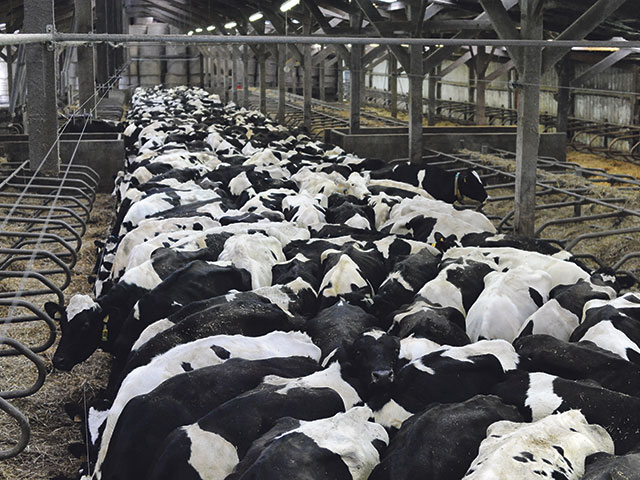
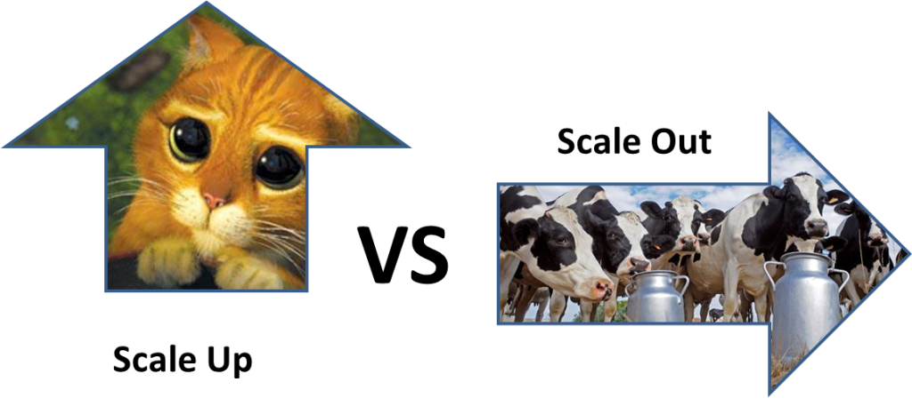
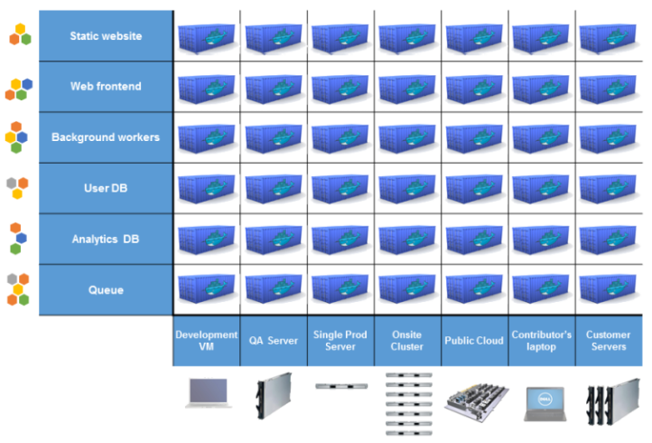
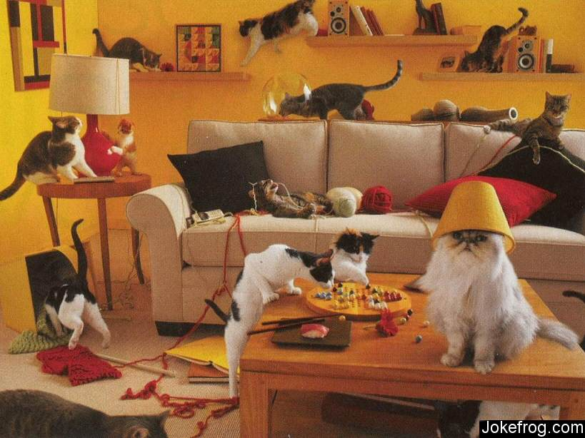
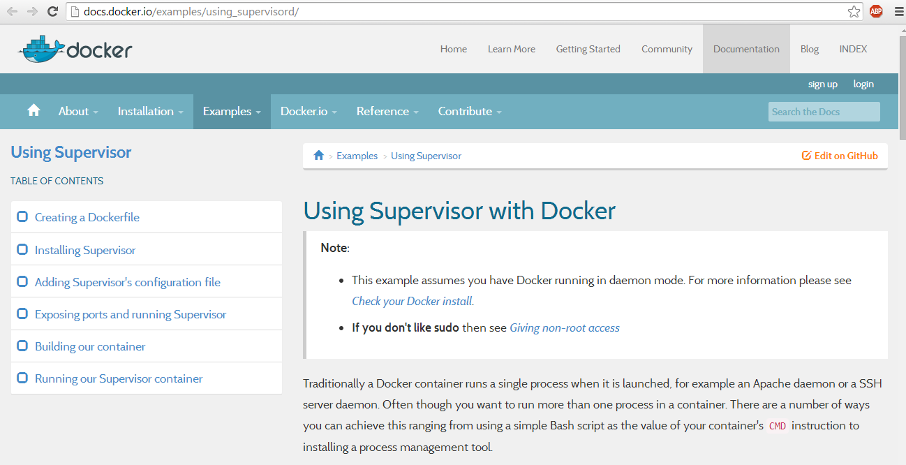
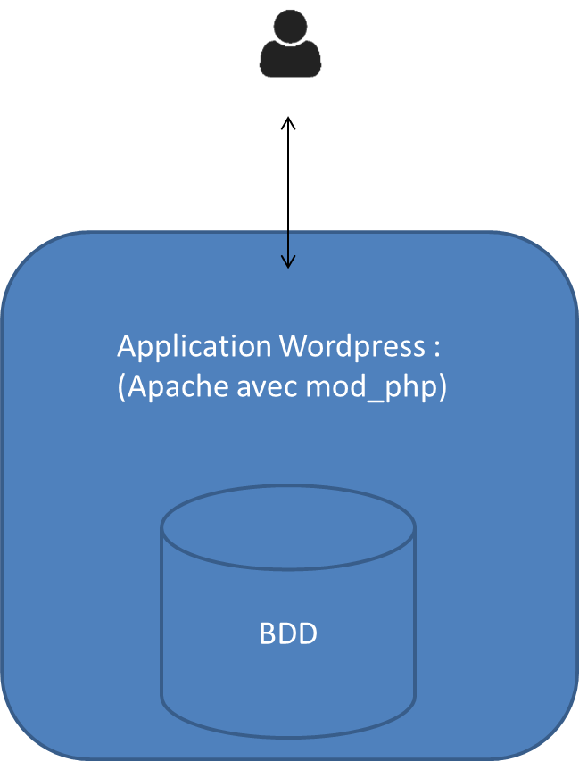
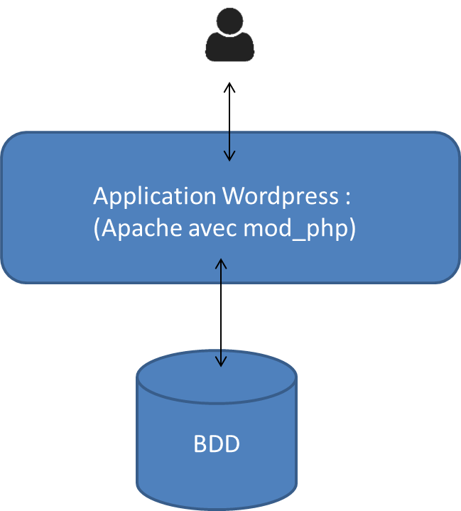
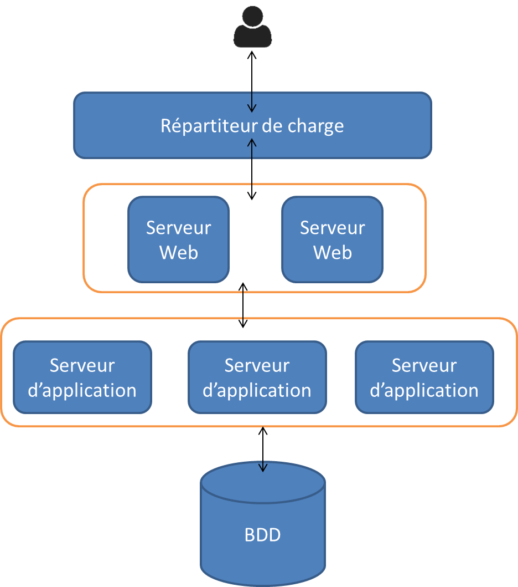

Oui, les "baleines" ?




Métaphore pour illustrer la capacité de mise à l'échelle de votre plateforme :




Un processus par containeur




FROM tutum/lamp
MAINTAINER damien.duportal@gmail.com
ADD ./my-wordpress-app /app
EXPOSE 80 3306
CMD ['/run.sh']$ docker build -t my-wp-app .
Step 0
...
$ docker run -p 80:80 my-wp-app
e565fbbc6033e565fbbc6033
FROM my-apache-php
MAINTAINER damien.duportal@gmail.com
ADD ./my-wordpress-app /app
EXPOSE 80
CMD ["/usr/sbin/apache2","-D","FOREGROUND"]FROM my-mysql
MAINTAINER damien.duportal@gmail.com
ADD monscript.sql /app/
RUN mysql < /app/monscript.sql
EXPOSE 3306
CMD ["/usr/bin/mysqld_safe""]$ docker build -t my-wp-app ./dockerfile1/
...
$ docker build -t mysql ./dockerfile2/
...
$ docker run --name mysql mysql
e565fbbc6033e565fbbc6033
$ docker run --link mysql:db -p 80:80 my-wp-app
3994fc1486923994fc148692

Et un chat de berger !
Votre application est-elle "12 factors" ?
Quelques ressources pratiques :